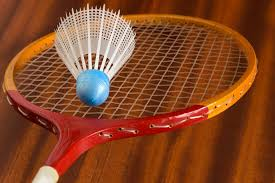

PINDER's PORTFOLIO
Pinder has a great interest in Sports and her favourite Sports is Cricket.
But She always playing different kinds of sports in her leisure time. Sports give her a fit body and Improves her mental helath as well.
Sports aslo helps her in Consebtrating in Studies.
It helps to enhance the overall personality of a specific and makes her more productive and alert.
It also rises her social interaction.
There are many types of sports which enhance the overall personality.
Some of Pinder's Favorite Sports are given below:-
1. Cricket
2.Football
3.Badminton.
4. Basketball
Pinder Usually play these sports on Weekends like Cricket. She like to play it with family for fun and some exercise. But Badminton,
she plays daily.
Cricket
Health benefits of cricket
Although there is some standing around, to play cricket you need to be fit and strong, and have good hand-eye
coordination and ball-handling skills. Cricket involves sprinting between wickets and running to stop balls, as well
as bowling and throwing.
(a).Health benefits include:
I. Endurance and stamina
II. Balance and coordination
III. Physical fitness
IV. Improving hand-eye coordination.
(b) Other benefits of cricket
I. Team skills
II Social skills such as cooperation, communication and learning how to cope with winning and losing
III. Social interaction – it’s a great way to meet new people and make new friends.
Badminton
Badminton is an International Level Sports which is very Popular among many countries. Here are some Marvelous benefits to health:
1. Good physique and toning of muscles
One among the important benefits of badminton is that it tones your muscles. Everybody loves a lean and petite figure,
with the curves and leanness efficiently balanced in the right proportions, irrespective of one’s size or weight.
2. Improves metabolism rate
One of the benefits of playing badminton also includes an increased metabolic rate. Playing badminton, like
any other sport sweats you out and burns calories within the body. This leads to
an increased demand for oxygen to compensate for the energy deficit created within the body.
